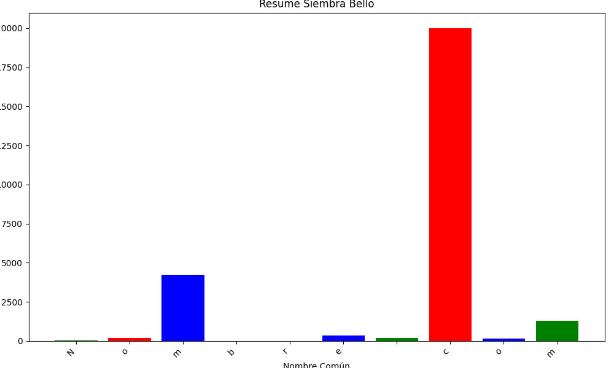

REPORTES DE LA SIEMBRA DE ÁRBOLES
Aquí se mostrarán tablas que representan conjuntos de datos de municipios de Antioquia que se utilizan para aplicar diferentes filtros y realizar análisis específicos.
-
Sta Fe de Antioquia:
Muestra todos los datos encontrados de santa fe de Antioquia donde se tengan siembras de más de 250 árboles -
Caucasia:
Muestra todos los datos filtrados de Caucasia e interpreta sus estadísticas -
Veredas del Río & Salazar de Belmira:
Muestra todos los datos filtrados de las veredas Río arriba y Salazar de Belmira -
Veredas Quitasol de Bello:
Muestra los datos encontrados de las veredas Quitasol de Bello mostrando además las medias de cada ítem de la tabla -
Caramanta:
Mostrar todos los datos encontrados de caramanta donde se tengan siembras de más de 100 árboles -
Vereda Mallarino de Yarumal:
Muestra los datos encontrados de la vereda Mallarino del municipio de Yarumal

×

YARUMAL
×

SANTA FE DE ANTIOQUIA
×

CAUCASIA
×

BELMIRA
×

BELLO

×

Caramanta